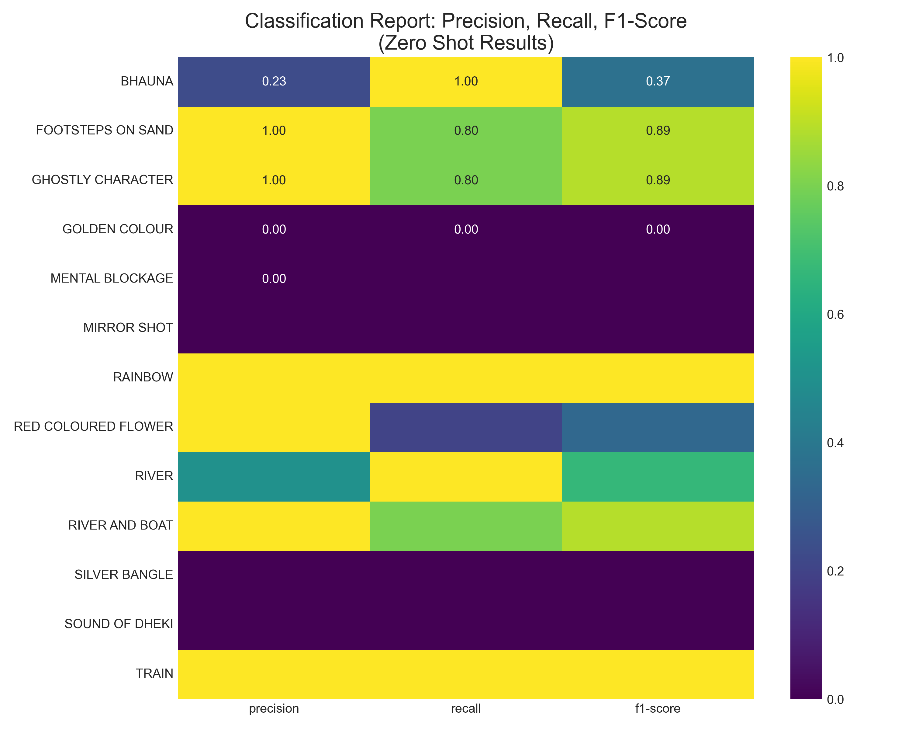

Results & Performance
Model Performance Comparison
Zero-Shot Performance Distribution
-
Perfect Recognition (100%) 4 metaphors
-
Good Recognition (80%) 3 metaphors
-
Poor Recognition (20%) 1 metaphor
-
Complete Failure (0%) 5 metaphors
Key Findings
- Perfect Ensemble Performance: 100% accuracy achieved through multi-modal feature fusion
- Cultural Blind Spots: 5 metaphors (38.5%) completely failed in Zero-Shot, all culturally-specific
- Universal vs Cultural: Universal metaphors (River, Rainbow, Train) achieved 100% Zero-Shot accuracy
- Confusion Patterns: BHAUNA was the most common confusion target, appearing 4 times
- Color Metaphors Struggle: Golden Colour and Red Flower achieved 0% and 20% respectively
Classification Reports
Zero-Shot Model
Ensemble Model